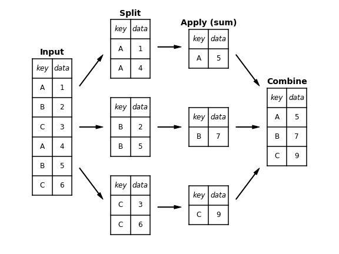

Bu sayfa orijinal kitap bölümünün eksiksiz Türkçe uyarlamasıdır — atlanan başlık/kod yoktur. Zor yerlerde ek ders notu ve 🧪 Şimdi deneyin kutuları vardır.
Orijinal (EN): 03.08 Aggregation and Grouping · Jupyter notebook
3.8 Agregasyon ve Gruplama
Orijinal: Aggregation and Grouping
Birçok veri analizi görevinin temel parçası verimli özetlemedir: büyük bir veri kümesinin belirli yönlerini tek sayıyla özetleyen sum, mean, median, min, max gibi agregasyonlar. Bu bölümde Pandas'ta NumPy dizilerindekine benzer basit işlemlerden groupby kavramına dayalı daha gelişmiş işlemlere geçeceğiz.
Kolaylık için önceki bölümlerdeki display yardımcı sınıfını kullanacağız:
import numpy as np
import pandas as pd
class display(object):
"""Display HTML representation of multiple objects"""
template = """<div style="float: left; padding: 10px;">
<p style='font-family:"Courier New", Courier, monospace'>{0}</p>{1}
</div>"""
def __init__(self, *args):
self.args = args
def _repr_html_(self):
return '\n'.join(self.template.format(a, eval(a)._repr_html_())
for a in self.args)
def __repr__(self):
return '\n\n'.join(a + '\n' + repr(eval(a))
for a in self.args)Planets Verisi
Seaborn paketindeki Planets veri kümesini kullanacağız (bkz. görselleştirme bölümleri). Diğer yıldızların çevresinde keşfedilen ötegezegenlere ilişkin bilgi içerir; Seaborn ile indirilebilir:
import seaborn as sns
planets = sns.load_dataset('planets')
planets.shapeplanets.head()Pyodide ortamında seaborn yüklüyse sns.load_dataset('planets') çalışır; aksi halde örnekleri okuyarak ilerleyin.
2014'e kadar keşfedilen 1000'den fazla ötegezegene ilişkin ayrıntılar içerir.
Pandas'ta Basit Agregasyon
2.4 Agregasyonlar'da NumPy dizileri için agregasyonları gördük. Tek boyutlu Series için agregatlar tek değer döndürür:
rng = np.random.RandomState(42)
ser = pd.Series(rng.rand(5))
serser.sum()ser.mean()DataFrame için varsayılan olarak agregatlar her sütun içinde sonuç üretir:
df = pd.DataFrame({'A': rng.rand(5),
'B': rng.rand(5)})
dfdf.mean()axis ile satırlar boyunca da agregasyon yapılabilir:
df.mean(axis='columns')Pandas Series ve DataFrame ortak agregasyonların yanı sıra her sütun için birkaç özet veren describe yöntemini içerir. Eksik satırları düşürerek Planets verisinde deneyelim:
planets.dropna().describe()Bu yöntem veri kümesinin genel özelliklerini anlamaya yardımcı olur. Örneğin year sütununda ötegezegenler 1989'dan beri keşfedilmiş olsa da veri kümesindeki gezegenlerin yarısı 2010 veya sonrasında keşfedilmiş — büyük ölçüde Kepler görevi sayesinde.
Pandas'taki diğer yerleşik agregasyonların özeti:
| Agregasyon | Döndürdüğü |
|---|---|
count | Toplam öğe sayısı |
first, last | İlk ve son öğe |
mean, median | Ortalama ve medyan |
min, max | Minimum ve maksimum |
std, var | Standart sapma ve varyans |
mad | Ortalama mutlak sapma |
prod | Tüm öğelerin çarpımı |
sum | Tüm öğelerin toplamı |
Bunların hepsi DataFrame ve Series yöntemleridir.
Daha derine inmek için basit agregatlar çoğu zaman yeterli değildir. Bir sonraki düzey groupby işlemidir — verinin alt kümeleri üzerinde hızlı ve verimli agregasyon.
groupby: Böl, Uygula, Birleştir
Basit agregatlar veri kümesinin tadını verir; çoğu zaman etiket veya indekse göre koşullu agregasyon isteriz — SQL'deki “group by” komutundan gelen ad; Hadley Wickham'ın ifadesiyle split, apply, combine (böl, uygula, birleştir).
Split, Apply, Combine
“Uygula” adımının toplama agregasyonu olduğu kanonik örnek aşağıdaki şekilde gösterilir:

groupby şunları yapar:
- Böl (split):
DataFramebelirtilen anahtar değerine göre parçalanır ve gruplanır. - Uygula (apply): Her grupta genelde agregasyon, dönüşüm veya filtreleme hesaplanır.
- Birleştir (combine): Sonuçlar çıktı dizisinde birleştirilir.
Bunu maskeleme, agregasyon ve birleştirme ile elle yapabilirdiniz; önemli nokta: ara bölümlerin açıkça oluşturulması gerekmez. groupby çoğu zaman tek geçişte her grup için toplam, ortalama, sayım vb. günceller. Gücü, kullanıcının alttaki hesabı düşünmeden işlemi bir bütün olarak görmesidir.
Somut örnek için girdi DataFrame'ini oluşturalım:
df = pd.DataFrame({'key': ['A', 'B', 'C', 'A', 'B', 'C'],
'data': range(6)}, columns=['key', 'data'])
dfEn temel split-apply-combine, DataFrame'in groupby yöntemiyle istenen anahtar sütun adının verilmesiyle hesaplanır:
df.groupby('key')Dönen nesne bir DataFrameGroupBy nesnesidir, DataFrame kümesi değil. Gruplara “hazır” özel bir görünüm düşünün; agregasyon uygulanana kadar hesap yapılmaz (tembel değerlendirme).
df.groupby('key').sum()sum yalnızca bir seçenektir; çoğu Pandas/NumPy agregasyonu ve birçok DataFrame işlemi uygulanabilir.
GroupBy Nesnesi
GroupBy esnek bir soyutlamadır; altta daha gelişmiş işlemler yapılır. Planets verisiyle örnekler: aggregate, filter, transform, apply — sonraki alt bölümde; önce temel GroupBy işlevleri.
Sütun indeksleme
GroupBy, DataFrame gibi sütun indekslemesini destekler:
planets.groupby('method')planets.groupby('method')['orbital_period']Orijinal gruptan belirli bir Series seçildi; agregasyon çağrılana kadar hesap yok:
planets.groupby('method')['orbital_period'].median()Her yöntemin duyarlı olduğu yörünge periyodu (gün) ölçeğine dair fikir verir.
Gruplar üzerinde döngü
GroupBy gruplar üzerinde doğrudan yineleme destekler:
for (method, group) in planets.groupby('method'):
print("{0:30s} shape={1}".format(method, group.shape))Hata ayıklma için elle incelemede yararlıdır; çoğu zaman yerleşik apply daha hızlıdır.
Dispatch yöntemleri
GroupBy'da açıkça tanımlanmayan yöntemler gruplara iletilir; describe her grup için describe çağırmaya eşdeğerdir:
planets.groupby('method')['year'].describe().unstack()Bu tablo veriyi anlamaya yardımcı olur: 2014'e kadar gezegenlerin büyük çoğunluğu Radial Velocity ve Transit yöntemleriyle keşfedilmiş; Transit son yıllarda yaygınlaşmış. Transit Timing Variation ve Orbital Brightness Modulation 2011'den sonra kullanılmış.
Aggregate, Filter, Transform, Apply
Önceki tartışma birleştirme için agregasyona odaklandı; GroupBy'da aggregate, filter, transform ve apply de vardır. Aşağıdaki alt bölümler için örnek DataFrame:
rng = np.random.RandomState(0)
df = pd.DataFrame({'key': ['A', 'B', 'C', 'A', 'B', 'C'],
'data1': range(6),
'data2': rng.randint(0, 10, 6)},
columns = ['key', 'data1', 'data2'])
dfAggregation
sum, median ile tanıdık agregasyonların ötesinde aggregate daha fazla esneklik sunar — dize, fonksiyon veya liste alıp hepsini birden hesaplayabilir:
df.groupby('key').aggregate(['min', np.median, max])Yaygın desen: sütun adlarını o sütuna uygulanacak işlemlere eşleyen sözlük:
df.groupby('key').aggregate({'data1': 'min',
'data2': 'max'})Filtering
Filtreleme, grup özelliklerine göre veriyi düşürür. Örneğin standart sapması eşiğin üstündeki grupları tutmak:
def filter_func(x):
return x['data2'].std() > 4
display('df', "df.groupby('key').std()",
"df.groupby('key').filter(filter_func)")Filtre fonksiyonu grubun geçip geçmeyeceğini belirten Boolean döndürmelidir. Burada A grubunun standart sapması 4'ten büyük olmadığı için düşürülür.
Transformation
Agregasyon verinin küçültülmüş biçimini döndürürken dönüşüm, birleştirmek için tam verinin dönüştürülmüş biçimini döndürür — çıktı girişle aynı şekildedir. Yaygın örnek: grup ortalamasını çıkararak ortalamak:
def center(x):
return x - x.mean()
df.groupby('key').transform(center)apply yöntemi
apply, gruba keyfi bir fonksiyon uygular. Fonksiyon DataFrame alıp Pandas nesnesi veya skaler döndürmelidir. Örneğin ilk sütunu ikincinin toplamına göre normalize etmek:
def norm_by_data2(x):
# x is a DataFrame of group values
x['data1'] /= x['data2'].sum()
return x
df.groupby('key').apply(norm_by_data2)apply içinde sütunlara atama yapmak bazen uyarı üretir; üretim kodunda transform veya açık döngü tercih edin.
GroupBy içinde apply esnektir; tek ölçüt fonksiyonun DataFrame alıp Pandas nesnesi veya skaler döndürmesidir.
Bölme Anahtarının Belirtilmesi
Basit örneklerde DataFrame tek sütun adına göre bölündü. Gruplar başka yollarla da tanımlanabilir.
Liste, dizi, seri veya indeks
Anahtar, DataFrame uzunluğuyla eşleşen herhangi bir seri veya liste olabilir:
L = [0, 1, 0, 1, 2, 0]
df.groupby(L).sum()Bu, df.groupby('key')'nin daha ayrıntılı eşdeğeridir:
df.groupby(df['key']).sum()Sözlük veya seri ile indeks eşlemesi
İndeks değerlerini grup anahtarlarına eşleyen sözlük de verilebilir:
df2 = df.set_index('key')
mapping = {'A': 'vowel', 'B': 'consonant', 'C': 'consonant'}
display('df2', 'df2.groupby(mapping).sum()')Herhangi bir Python fonksiyonu
İndeks değerini alıp grup döndüren herhangi bir fonksiyon:
df2.groupby(str.lower).mean()Geçerli anahtarların listesi
Önceki anahtar seçenekleri çoklu indeks için birleştirilebilir:
df2.groupby([str.lower, mapping]).mean()Gruplama Örneği
Birkaç satır Python ile yöntem ve on yıla göre keşfedilen gezegen sayısını sayabiliriz:
decade = 10 * (planets['year'] // 10)
decade = decade.astype(str) + 's'
decade.name = 'decade'
planets.groupby(['method', decade])['number'].sum().unstack().fillna(0)Bu, gerçekçi veri kümelerinde öğrendiğimiz işlemleri birleştirmenin gücünü gösterir: ötegezegenlerin ilk keşfinden sonra ne zaman ve nasıl tespit edildiğine dair kaba bir resim hızla elde edilir.
Bu kod satırlarını adım adım inceleyip her adımın sonuca ne yaptığını anlamanızı öneririm — karmaşık görünse de parçaları anlamak kendi verinizi keşfetmenin yolunu açar.
planets verisinde (veya küçük bir örnek çerçevede) groupby('method')['distance'].median() hesaplayın:
import pandas as pd
try:
import seaborn as sns
planets = sns.load_dataset('planets')
print(planets.groupby('method')['distance'].median())
except Exception as e:
df = pd.DataFrame({'method': ['A','A','B'], 'distance': [1.0, 2.0, 5.0]})
print(df.groupby('method')['distance'].median())